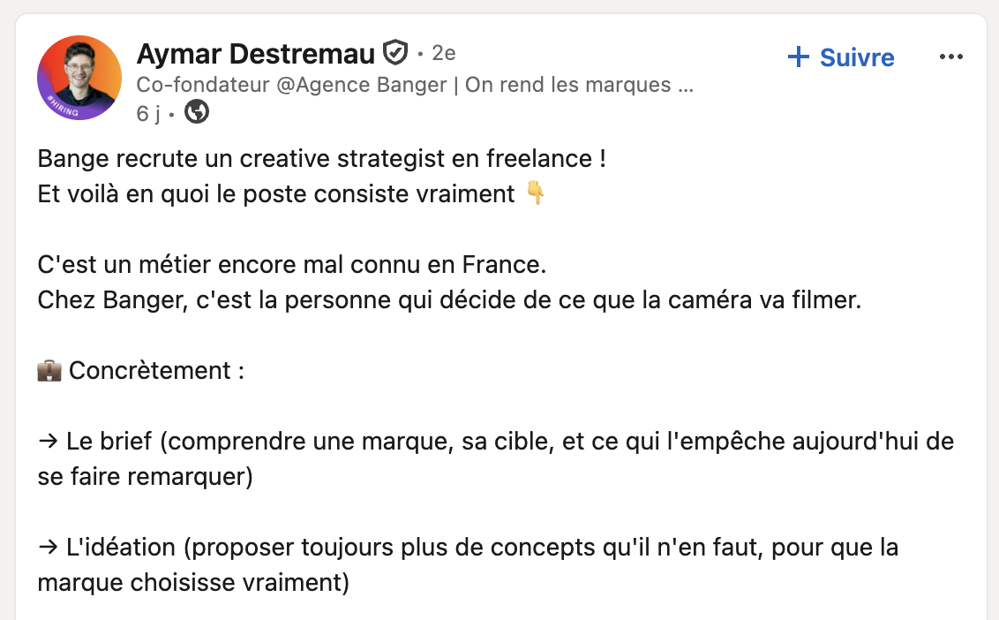

Écouter la personne, son expertise, ses convictions et ses histoires.
Salut, moi c’est Ambroise.Ce matin, j’ai vu ça.

Alors j’ai demandé à mon pote Claude :
« Banger recrute un creative strategist en freelance !
Et voilà en quoi le poste consiste vraiment... »
Et voilà en quoi le poste consiste vraiment... »
Ni une ni deux, voilà ma candidature.
Je travaille en growthdepuis plus de cinq ans,entre stratégie d’acquisition,production vidéoet analyse des performances.Concrètement, mon boulot,c’est de chercher les idéesqui méritent qu’on s’arrêtede scroller,puis de trouverla meilleure façonde les exécuter.
Le point de départ · Homa Games
J’ai d’abord apprisà interpréter la donnée.Rétention. Clics. Conversion.Indispensable.Mais la datan’écrit pas une bonne vidéo.
Chez Homa Games, je pilotais l’acquisition et la monétisation d’un portefeuille de six jeux mobiles, avec jusqu’à 100 k$ investis chaque semaine. J’analysais les cohortes, la LTV, le ROAS et les performances créatives pour décider quoi tester, arrêter ou déployer à plus grande échelle.
Aujourd’hui · Rivrs
Aujourd’hui, je travailleau quotidienavec des influenceurset des créateurs de contenu.Nous cherchons l’angle,coécrivons le scriptet affinons le message.
Cette collaboration permanente m’a appris à écrire pour être compris et regardé, mais aussi à tenir compte de la personnalité, du rythme et de la manière de parler de chaque créateur. Je pilote aujourd’hui ce travail pour dix jeux, avec une équipe de sept personnes.
50+ CRÉATEURS50+ VIDÉOS / SEMAINE20+ COMPTES5 LANGUES
Formats verticaux
Reels. TikTok. Shorts.C’est la matièreque je travailletous les jours.Au travail.Et en dehors.
Je connais leurs codes parce que je produis et analyse quotidiennement des contenus verticaux. Il y a quelques années, j’ai lancé mon propre concept viral sur TikTok (90 k commentaires en 10 vidéos autour d’un concept loufoque de bataille de territoires). J’accompagne également mon frère, photographe culinaire chez M57 Studio, dans la diversification de ses contenus courts pour ses clients.
« Mais d’où tu sors une idée pareille ? »Édouard, mon collègue qui monte mes scripts
Ce que le terrain m’a appris
J’ai appris quela structureet la rigueursont essentielles.Mais qu’il faut toujourscontinuer à apprendre.Les codes changent.Les formats aussi.Les bonnes vidéosne laissent rien au hasard.
L’objectif est d’obtenir un script assez structuré pour retenir l’attention, tout en tenant compte des réalités côté production. Comprendre le fond. Puis travailler la forme.
Isoler l’angle qui crée de la curiosité sans trahir le fond.
Coécrire une ouverture, une structure et des formulations naturelles.
Lire la rétention et les réactions pour renforcer le format suivant.
Changer d’univers · Noka Matcha
Un autre produit.Un autre public.La même question.Quel angle donneraenvie de regarder ?
J’ai accompagné cette marque e-commerce dans sa stratégie de media buying et de production de contenu sur Meta, Google, TikTok et Pinterest. Le travail créatif consistait notamment à transformer des attributs très sensoriels, comme le goût, la couleur, la texture et le rituel, en angles publicitaires immédiatement compréhensibles.
Pourquoi Banger
J’adore le jeu vidéo.Mais j’ai aussi enviede travailler davantageavec le monde réel,sur des sujets plus variés.Je m’éclatedans mon boulot.Et j’ai envie de le faireavec plus d’énergie,plus de moyenset plus d’impact.
Ce que je peux apporter à un pôle éditorial
Des formats cohérentsconstruits pour êtreregardés, retenuset déclinés
Je peux intervenir en amont sur les sujets et les angles, participer à la coécriture, structurer les retours aux équipes de production et utiliser les performances publiées pour orienter les prochains formats.
AnglesFaire émerger une idée forte plutôt que remplir un calendrier.
Formats YouTubePenser promesse, titre, miniature, ouverture et série récurrente comme un tout.
ScriptsCoécrire avec les talents, sans lisser leur personnalité ni leur façon de parler.
ItérationsUtiliser rétention, commentaires et signaux d’engagement pour améliorer la suite.
Je sais partird’un objectif marketing.Le traduire en angles créatifs,en scriptset en formats concrets.
Disponible en freelance pour renforcer une réflexion éditoriale, préparer de nouveaux formats et accompagner leur production puis leur amélioration dans le temps.
Creative strategy · Formats vidéo · Scripts · Creator collaboration